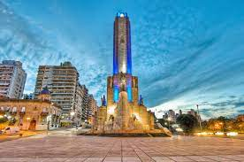

Este es el sitio web de Luca
Lionel Messi, uno de los mejores futbolistas de todos los tiempos, ha mantenido una estrecha relación con su ciudad natal, Rosario, en Argentina. Desde su infancia, Messi ha estado profundamente arraigado a la cultura y la gente de esta ciudad, que ha sido un gran apoyo para él en su carrera. Rosario es una ciudad ubicada en la provincia de Santa Fe, en Argentina, conocida por su rico patrimonio cultural y su amor por el fútbol. Es el lugar de nacimiento de Messi, donde pasó su infancia y donde comenzó a jugar al fútbol en las calles de la ciudad. Messi ha mencionado en varias ocasiones que su amor por el fútbol se debe en gran parte a la cultura futbolística de Rosario. A lo largo de los años, Messi ha mantenido un fuerte vínculo con su ciudad natal. Ha regresado a Rosario en numerosas ocasiones, especialmente durante las vacaciones de verano, para pasar tiempo con su familia y amigos. Además, Messi ha invertido en Rosario, construyendo una serie de instalaciones deportivas y sociales para la comunidad local. En 2017, Messi inauguró una estatua en su honor en el Parque Independencia de Rosario, donde solía jugar al fútbol de niño. La estatua, que muestra a Messi en acción con la pelota, se ha convertido en un lugar de peregrinación para los fanáticos del fútbol de todo el mundo. En resumen, la relación de Messi con Rosario es profundamente arraigada y significativa. Desde su infancia hasta su carrera profesional, Rosario ha sido una gran influencia en su vida y en su amor por el fútbol. Messi ha demostrado su gratitud y amor por la ciudad a lo largo de los años, y su legado como uno de los mejores futbolistas de todos los tiempos está indudablemente ligado a su conexión con su ciudad natal.